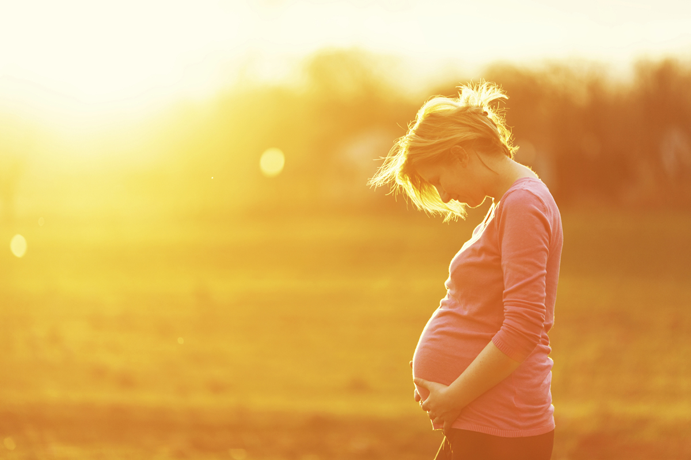
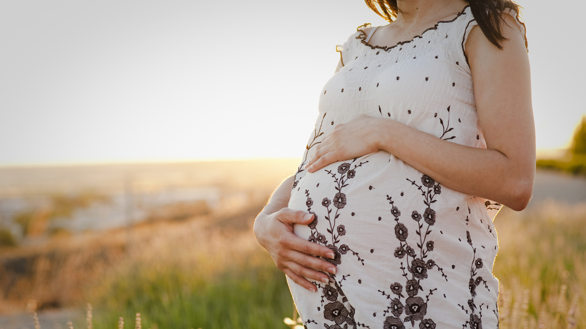

THE SIGNS OF PREGNANCY
For women who have a regular monthly cycle, the earliest and
most reliable sign of pregnancy is a missed period. Sometimes
women who are pregnant have a very light period, losing only a little
blood. Other signs of pregnancy are as follows:
Feeling sick you may feel sick,
or even be sick. This is commonly
known as morning sickness but it can happen at any time of the
day. If you are being sick all the time and cannot keep anything
down, contact your GP.
Changes in your breasts your breasts may become larger and feel tender, like they might do before your period. They may also tingle. The veins may show up
more and the nipples may darken and stand out.
Needing to pass urine more often you may find that you
have to get up in the night.
Being constipated.
An increased vaginal discharge without any soreness or irritation.
Feeling tired.
Having a strange taste in your
mouth many women describe
it as metallic.
Going off certain things, for example tea, coffee, tobacco smoke or fatty food.

PREGNANCY TESTS
Pregnancy tests can be carried out on a sample of urine from the first day of a missed period, which
means that, if you are pregnant, you are about two weeks after conception. Some very sensitive
tests can be used even before you miss a period.
You can collect urine at any time of the day. Use a clean, soap-free, well-rinsed container to collect it.
You can get pregnancy tests free of charge from your GP or family planning clinic. Pregnancy tests are also available at NHS walk-in centres. Many pharmacists and most
pregnancy advisory services also offer tests, usually for a small fee. You can buy do-it-yourself pregnancy testing kits from pharmacists. They can give you
a quick result and you can do the test in private. There are a range of tests that are available. How they work varies, so check
the instructions.
Results of the test
A positive test result is almost certainly correct. A negative result is less reliable. If you still think you are pregnant, wait a week and try again or go and see a midwife or GP.
Help and support
You might
See your midwife or doctor as soon as possible if you are currently being treated for a long-term disease such as diabetes or epilepsy, or you have serious mental health problems.
BECOMING PREGNANT ACCESSING ANTENATAL CARE
When you find out that you
are pregnant, its important to contact an NHS professional as soon as possible.
You can book an appointment directly with a midwife. Your GP surgery will be able to put you
in touch with your nearest midwife service.
If you have special health needs,
your midwife, GP or other doctors
may take shared responsibility for your maternity care.
Your first or second meeting with your midwife is the booking
appointment. This will last for up to
two hours and could take place at
a hospital, in a clinic or a Childrens Centre, in a GP surgery or at home. Your midwife will ask you many questions about your health, the
health of your family and your
preferences in order to develop your own plan of care. Your midwife will order a number of blood tests and scans, which will be done
throughout your pregnancy. The results of these tests may affect your choices later in pregnancy, so its important not to miss them. Your midwife will also ask about any other
help or social care support you may have or need for example support
from social workers or family liaison officers. For more information about the booking appointment.
MEASURING YOUR PREGNANCY
Doctors and midwives in the UK
measure the duration of pregnancy from the first day of your last menstrual period, not from the day you conceive. So when you
are 'four weeks pregnant', it is actually about two weeks after
you conceived. Pregnancy normally lasts for 37-42 weeks from the first day of your last period.
The average is 40 weeks.
If you are not sure about the date of your last period, then your early
scan will give a
good indication of when your
baby will be due.
In the very early weeks, the
developing baby is called an
embryo. From about eight weeks, it is called a fetus.
WEEK 3
This is three weeks from the first day of your last period. The
fertilised egg moves slowly along
your fallopian tube towards your uterus. It begins as one single cell,
which divides again and again.
By the time the fertilised egg
reaches your uterus, it has become a mass of over 100 cells, called an
embryo. It is still growing. Once in your uterus, the embryo attaches
itself into your uterus lining.
This is called implantation.Already your baby's nervous system is starting to develop. A groove forms in the top layer of cells. The
cells fold up and round to make a hollow tube called the neural tube.
This will become your baby's brain and spinal cord, so the tube has a 'head end' and a 'tail end'. Defects
in this tube are the cause of spina bifida. The heart is
also forming and your baby already has some blood vessels. A string of
these blood vessels connects your
baby to you - this will become the
umbilical cord.
WEEKS 4-5
Week 4
The actual size of the embryo
is about 5mm
The embryo now settles into your
uterus lining. The outer cells reach out like roots to link with your blood supply. The inner cells form two
and then later three layers. Each of these layers will grow to be different parts of your baby's body. One layer becomes their brain and
nervous system, skin, eyes and ears.
Another layer becomes their lungs,
stomach and gut. The third layer becomes their heart, blood, muscles
and bones.
The fifth week is when you will
miss your period. At this time, most
women are only just beginning to think they may be pregnant.
WEEKS 6-7
There is now a large bulge where your baby's heart is and a bump for the head because the brain is
developing. The heart begins to
beat and can be seen beating on an
ultrasound scan. Dimples on the side
of the head will become the ears
and there are thickenings where the eyes will be. On the body, bumps are forming that will become muscles
and bones. And small swellings
(called 'limb buds') show where the arms and legs are growing.
At seven weeks, the embryo has grown to about 10mm long from head to bottom. This measurement is called the 'crown–rump' length.
Week 6
The actual size from head to bottom is about 8mm
Week 7
The actual size from head to bottom is about 10mm

HOW YOUR BABY DEVELOPS
WEEKS 8-9:-
Your baby-s face is slowly forming. The eyes are more obvious and have some colour in them. The
fetus has a mouth with a tongue.
There are the beginnings of hands and feet, with ridges where the fingers and toes will be. The major
internal organs - the heart, brain, lungs, kidneys, liver and gut - are all developing. At nine weeks, the baby
has grown to about 22mm long from head to bottom.
Week 9
The actual size from head to bottom is about 22mm
WEEKS 10-14:-
Just 12 weeks after conception, the
fetus is fully formed. Your baby has all of their organs, muscles, limbs
and bones, and their sex organs are developed. From now on your baby will grow and mature. Your baby is already moving about, but you will not be able to feel movements
yet. By about 14 weeks, your baby's heartbeat is strong and can be heard by an ultrasound scanner. The heartbeat is very fast - about
twice as fast as a normal adult's heartbeat. At 14 weeks, the baby
is about 85mm long from head to bottom. Your pregnancy may start to show, but this varies a lot from woman to woman.
Week 14
The actual size from head to bottom is about 85mm
WEEKS 15-22:-
Your baby is growing faster than at any other time in their life.
Their body grows bigger so that their head and body are more in proportion, and they don't look so 'top heavy'. The face becomes
much more defined and the hair, eyebrows and eyelashes are beginning to grow. Their eyelids stay closed over their eyes. Your baby already has their own individual fingerprints, as the lines on the skin
of their fingers are now formed. Their fingernails and toenails are growing and their hands can grip. At about 22 weeks, your baby
becomes covered in a very fine, soft hair called lanugo. We don't know what this hair is for, but it is thought that it may keep the
baby at the right temperature. The lanugo disappears before birth or soon after.
Between 16 and 22 weeks, you
will usually feel your baby move for
the first time. If this is your second
baby, you may feel it earlier - at about 16-18 weeks. At first, you
feel a fluttering or bubbling, or a
very slight shifting movement. This
can feel a bit like indigestion. Later, you will be able to tell that it is the
baby's movements and you may even see the baby kicking about.
Sometimes you will see a bump
that is clearly a hand or a foot.
WEEKS 23-30:-
Your baby is now moving about vigorously, and responds to touch and sound. A very loud noise close
by may make them jump and kick.
They are also swallowing small amounts of the amniotic fluid in
which they are floating, and are passing tiny amounts of urine back
into the fluid. Sometimes your baby
may get hiccups, and you can feel
the jerk of each hiccup. Your baby may also begin to follow a pattern for waking and sleeping. Very often this is a different pattern from yours. So when you go to bed at
night, your baby may wake up and
start kicking.
Your baby's heartbeat can be heard through a stethoscope. Later, your partner may be able to hear
the heartbeat by putting their ear
to your abdomen, but it can be
difficult to find the right place.At around 26 weeks your baby's eyelids open for the first time. Babies' eyes are almost always blue or dark blue, although some babies do have brown eyes at birth. It is not until some weeks after they are born that your baby's eyes will become the colour that they will stay. The head-to-bottom length at 30 weeks is about 33cm.
WEEKS 31-40:-
Your baby continues to grow. Their skin, which was quite wrinkled before, becomes smoother, and both the vernix and the lanugo begin to disappear.
By about 32 weeks, the baby is usually lying with
its head pointing downwards, ready for birth. The baby's head can 'engage', or move down into the pelvis, before birth. Sometimes the head doesn't engage until labour has started.
read more....